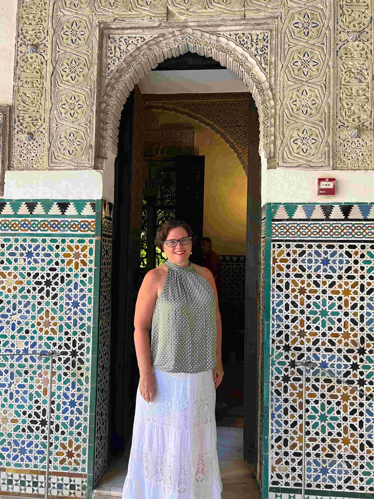
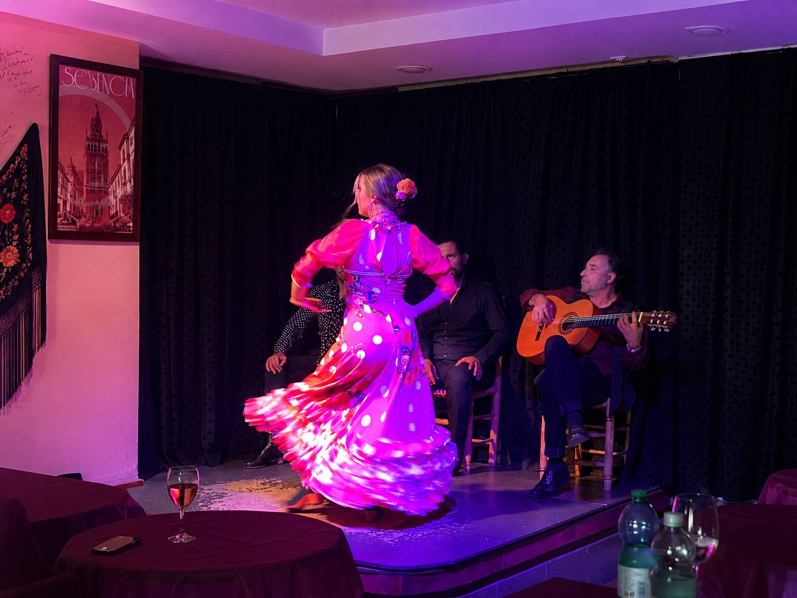
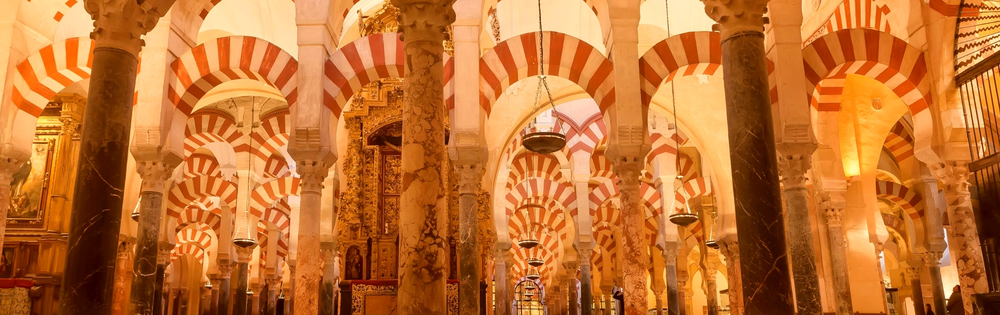
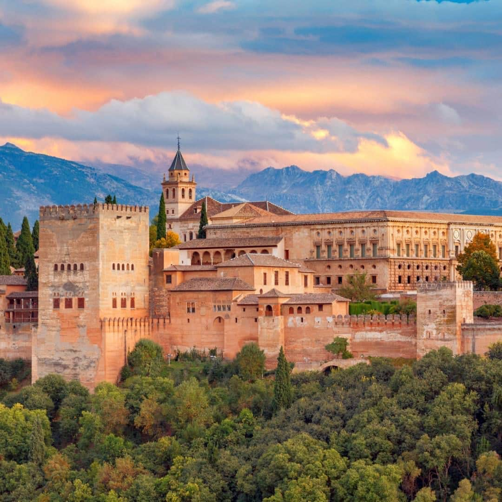
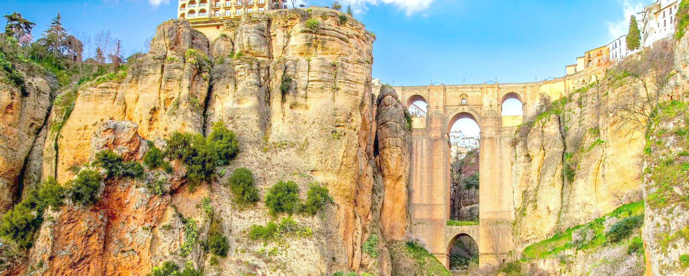
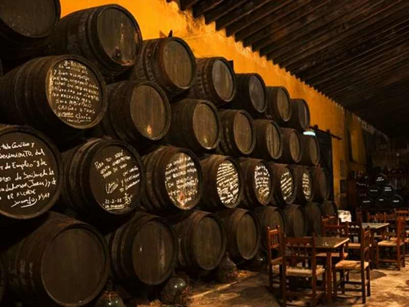
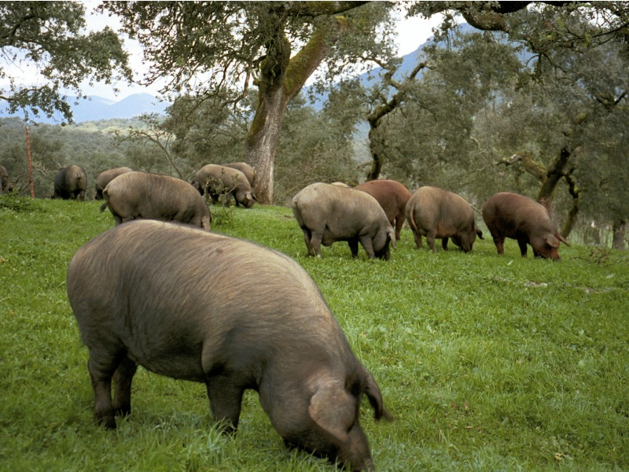
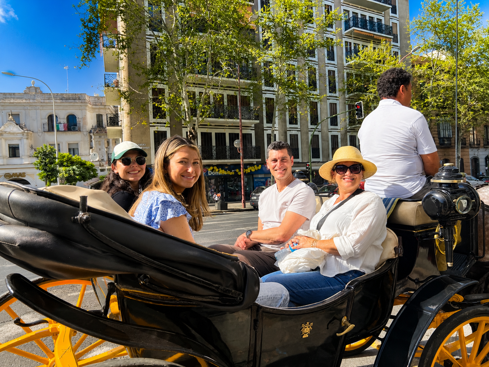
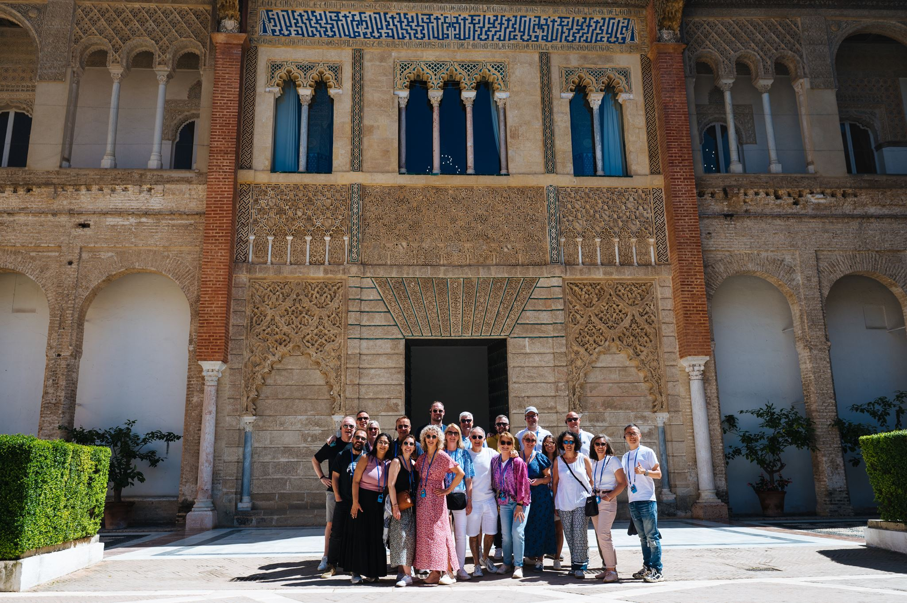
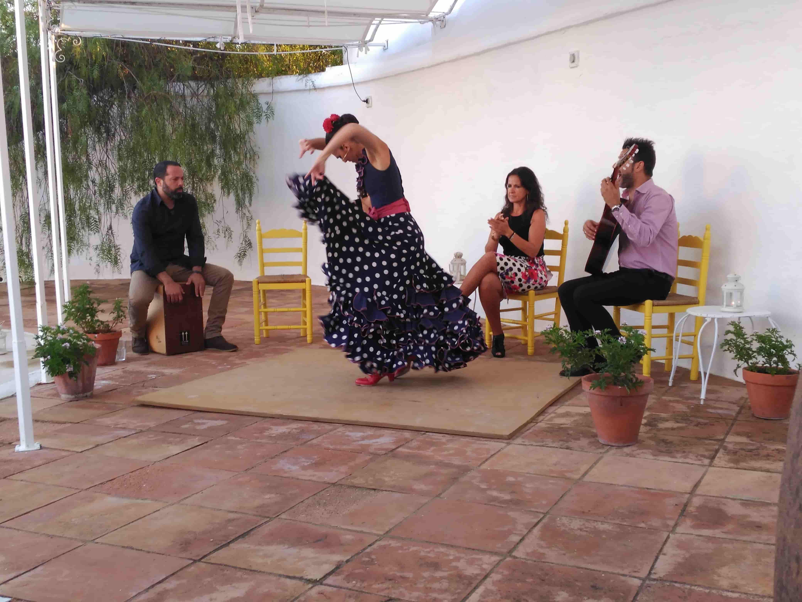

Sevilla på norsk
Seville with Gunvor

shall we go somewhere?
Tours & excursions
The excursions and experiences I offer in Seville and the rest of Andalucía. All private, for parties and groups, and built around you.

4 hours · Seville
First day in Seville
The cathedral, the Alcázar and Santa Cruz in one morning — where I always begin with new guests.
See and book →

4 hours · Seville
Breakfast, market and tapas
Andalusian breakfast, churros, Triana market and tapas at one of the oldest bars in town.
See the tour →

2 hours · Seville
From history to tapas
A cultural walk through the old town that ends in wine, Iberian ham and cheese.
See and book →

4 hours · Seville
The gateway to the Americas
The hidden history of the Arenal quarter, when every ship to the New World left from here — and a trip on the river.
See and book →

Evening · Seville
Tapas dinner and flamenco show
Dinner where locals eat, and flamenco in a small tablao afterwards.
See and book →

Morning · Alcázar
Alone in the Alcazar
Inside an hour before everyone else, while the palace gardens are still empty. Something I cannot offer myself.
See and book →
Booked with our partner — the price is the same as booking direct

Day trip · 1 h 45 min away
Córdoba
The Mezquita and the old Jewish quarter, with driver and local guide.
See and book →
Booked with our partner — the price is the same as booking direct

Day trip · 2 h 30 min away
Granada & the Alhambra
The Alhambra and the Generalife gardens. Tickets must be booked well ahead.
See and book →
Booked with our partner — the price is the same as booking direct

Day trip · Serranía de Ronda
Ronda and the white villages
The bridge over the gorge, and villages on the hillside where no tour buses stop.
See and book →
Booked with our partner — the price is the same as booking direct

Day trip · Jerez & Cádiz
Sherry bodega and Cádiz
A tasting in an old bodega in Jerez, and lunch in the oldest city in Europe.
See and book →
photo: olive farm
Half day · near Seville
Olive farm visit
Out among the olive groves, to see how the oil is made and taste it straight from the producer.
See the tour →

Day trip · Sierra de Aracena
Aracena and Iberian ham
Up into the mountains to the pigs behind the world's best ham — and the cellar where it hangs.
See and book →

Evening · Guadalquivir
Luxury dinner aboard a yacht
Your own boat, your own chef, the city sliding past. Good for celebrations.
See and book →

4 hours · Seville
Tapas tour with tastings
The bars I go to myself, in the order they should be visited.
See and book →

1.5 hours · Seville
Paella class with cathedral view
Ten people at most on a rooftop with the Giralda in front of you. You cook the paella yourself and eat it afterwards.
See and book →

Evening · Seville
Wine tasting with dinner
Spanish wines explained by someone who knows them, with food to match.
See and book →

2 hours · Seville
Horse carriage and tapas
The old town by horse carriage, with tapas stops along the way. Popular on wedding days.
See and book →

Groups from 10 people
Company and group travel
The whole thing arranged by my agency: hotels, guiding, dinners and transport.
Read more →

Private event · Seville
Dinner on a rooftop terrace
A private party above the rooftops, with the cathedral as your view. We have done it for up to 33 guests.
Ask for a quote →

Guide · every budget
Flamenco in Seville
Seven ways to experience flamenco here, from free on Plaza de España to your own private party.
Read the guide →
Some tours on this page are booked with our partners — the price is the same as booking direct.
tell me what you feel like
Can't find the tour you are looking for?
Send me a few words about when you are coming, how many you are and what you are curious about. Then I will build the day around you.
Send me a message